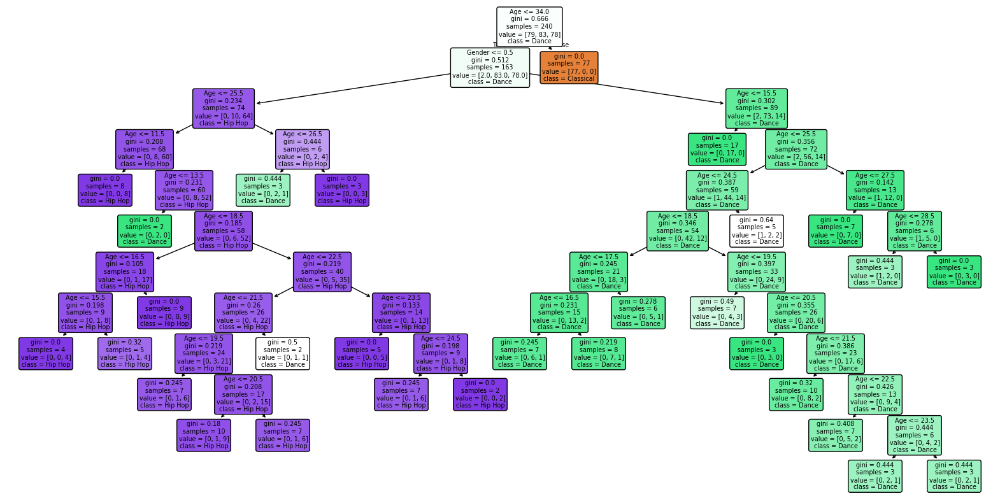

Example 1#
[1]:
import pandas as pd
from sklearn.tree import DecisionTreeClassifier
from sklearn.model_selection import train_test_split
from sklearn.metrics import accuracy_score
from joblib import dump, load
import matplotlib.pyplot as plt
from sklearn.tree import plot_tree
initial_data = pd.read_csv('data.csv')
X = initial_data.drop(columns = ['Music_Genre'])
y = initial_data['Music_Genre']
X_train, X_test, y_train, y_test = train_test_split(X, y, test_size=0.2)
model = DecisionTreeClassifier()
model.fit(X_train, y_train)
dump(model, 'musics.joblib')
predictions = model.predict(X_test)
score = accuracy_score(y_test, predictions)
# Plot the tree
plt.figure(figsize=(20,10)) # Set figure size for better readability
plot_tree(model, filled=True, feature_names=X.columns, class_names=model.classes_, rounded=True)
plt.show()

[ ]: